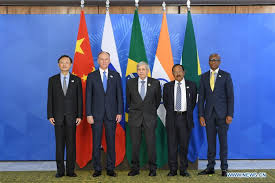

Présentation
Les BRICS+ visent à créer un ordre mondial plus multipolaire et équilibré, où les pays émergents et en développement ont une voix plus forte dans les affaires internationales. Le groupe cherche à réformer les institutions financières mondiales dominées par les pays occidentaux.

Objectifs principaux :
- Réforme du FMI et de la Banque mondiale : Augmenter le poids des pays émergents dans les quotes-parts et la gouvernance.
- Création d'institutions alternatives : Comme la Nouvelle Banque de Développement (NDB) et le Contingent Reserve Arrangement (CRA).
- Promotion du commerce en monnaies locales : Réduire la dépendance au dollar américain.
- Coopération Sud-Sud : Renforcer les ééconomiques et politiques entre pays en développement.
- Pluralisme culturel et politique : Défendre la diversité des modèles de développement.
Le BRICS+ représente ainsi une tentative de construire une architecture internationale parallèle qui reflète mieux la réalité économique du XXIe siècle.
Avis des internautes sur les objectifs du BRICS+
| Avis positifs | Source |
|---|---|
| "Les objectifs du BRICS+ sont louables : un monde multipolaire est plus stable qu'un monde unipolaire." | @Multipolariste |
| "Enfin une voix pour les pays du Sud ! Les objectifs de réforme sont nécessaires depuis longtemps." | @SudGlobal |
| "La NBD est une réussite concrète qui montre que les objectifs peuvent être atteints." | @FinanceSud |
| Avis négatifs | Source |
|---|---|
| "Les objectifs sont trop ambitieux pour un groupe aussi hétérogène. Difficile d'avoir une position commune." | @RealisteDiplo |
| "Réformer le FMI de l'intérieur serait plus efficace que de créer des institutions parallèles." | @PragmatiqueEco |
| "Certains objectifs sont contradictoires : comment promouvoir la démocratie avec des membres non-démocratiques ?" | @DémocrateInt |